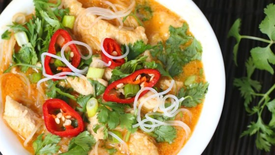

The Rundown:
10 min Prep Time
19 min Cook Time
29 min Total Time
Makes Four Servings
Ingredients:
- 2 tablespoons coconut oil
- 1 (11 ounce) bottle red Thai curry sauce
- (16 ounce) package skinless, boneless chicken breast halves, cut into small cubes
- 1/2 (16 ounce) package dried rice stick vermicelli noodles
Directions:
- Heat oil in a large skillet on high heat. Add chicken cubes; cook until browned, about 2 minutes per side. Reduce heat to medium-high and add coconut cream and curry sauce. Cook until chicken is no longer pink in the center and the juices run clear, about 5 minutes. An instant-read thermometer inserted into the center should read at least 165 degrees F (74 degrees C).
- Fill a large pot with lightly salted water and bring to a rolling boil; stir in vermicelli pasta and return to a boil. Cook pasta uncovered, stirring occasionally, until the pasta is tender yet firm to the bite, 4 to 5 minutes. Drain.
- Reduce skillet heat to simmer. Add the noodles and let simmer until flavors are absorbed, about 5 minutes. Divide chicken and noodles among individual serving bowls.